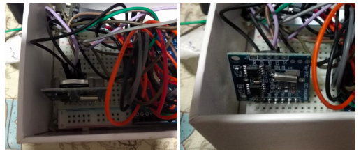

Estudo introdutório ao módulo RTC.
No decorrer do projeto foi constatado a necessidade da utilização de um temporizador para controle do tempo seja nas leituras ou envio de dados. Como solução decidimos implantar o módulo RTC para nos auxiliar nesta parte, pois implantar um relógio no arduino seria ineficiente, portanto o módulo RTC serviu como solução para este problema. O principal objetivo deste módulo, é capturar o horário da captura do dado para enviá-lo à estação base para se ter um maior controle do sistema monitorado.
Para instalação do hardware foi conectado alimentação vcc de 5V e gnd, ambos cedidos pelo arduino, já os pinos SDA e SCL foram conectados nos pinos A4 e A5 respectivamente como mostra figura abaixo. O componente se situa na estação remota, ou seja, a estação que irá transmitir os dados coletados pelo sensor.
Para poder explorar sua principal função no projeto, será necessário a utilizar uma biblioteca específica desenvolvida para ele que está disponível aqui, onde nela é possível captar o tempo já convertido para timestamp. Vale lembrar que a ainda não implementado nenhum código a respeito do módulo.